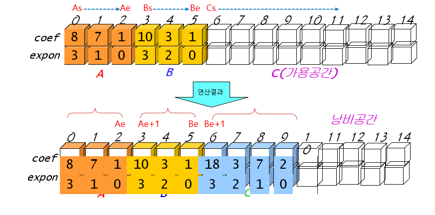

다항식 덧뺄셈을 구조체배열을 생성하여 구현한 두번째 방식입니다.
이 구현방법은 다항식에서 차수가 0이 아닌 항을 배열로 저장해서
하나의 배열에 입력 2개, 결과 1개의 다항식을 한꺼번에 나타낼 수 있는
알고리즘 입니다.
이 방법의 장점은 첫번째 배열을 사용하여 코드를 짜는 것 보다 메모리 공간을 효율적으로 사용할 수 있다는 것 입니다.
이 방법의 단점은 배열 사용법, 다항식 연산 알고리즘이 더 복잡해진다는 점 입니다.
왼쪽 각각의 메뉴들을 통해 구조체배열을 이용한 두번째 다항식 덧뺄셈 알고리즘을 알아보세요!
